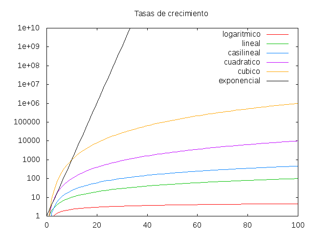
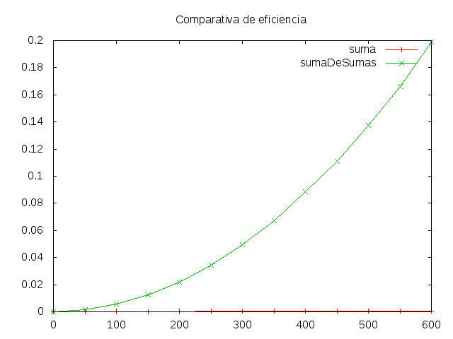
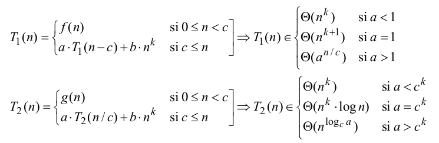

Tema 28: Análisis de la complejidad de los algoritmos
Índice
- 1. La notación de Landau
- 2. Órdenes de complejidad
- 3. Ejemplo de función con complejidad lineal O(n)
- 4. Ejemplo de función con complejidad constante O(1)
- 5. Ejemplo de función con complejidad cuadrática O(n²)
- 5.1. Especificación de la función sumaDeSumas
- 5.2. Definición recursiva de la función sumaDeSumas
- 5.3. Estadísticas de la función sumaDeSumas
- 5.4. Gráfica de coste de sumaDeSumas
- 5.5. Ecuaciones de coste de la función sumaDeSumas
- 5.6. Demostración de que sumaDeSumas ∈ O(n²) (es decir, es de coste cuadrático)
- 6. Ejemplo de función con complejidad exponencial O(2ⁿ)
- 7. Ejemplo de función con complejidad logarítmica O(log n)
- 8. Complejidad de la función inversa
- 9. Apéndices
- 10. Material complementario
- 11. Bibliografía
1. La notación de Landau
1.1. Definición de O(g)
La función f pertenece a la clase de complejidad de g (en símbolos, f ∈ O(g)) si existe un c y un n₀ tales que para todo n ≥ nₒ se tiene que
f(n) ≤ c g(n) - f ∈ O(g) syss ∃c∃nₒ∀n(n ≥ n₀ → |f(n)| ≤ c|g(n)|)
f ∈ O(g) syss
limsup |f(x)/g(x)| < ∞ x → ∞
- Intuitivamente, sólo se considera el término más importante y se ignoran los factores constantes.
- Ejemplos:
- 3n²+5n-7 ∈ O(n²).
- O(2g(n)) = O(g(n))
- O(log n) = O(ln n)
- O(3n²+5n-7) = O(n²)
- O(n²) ⊂ O(n³)
- O(2ⁿ) ⊂ O(3ⁿ)
1.2. Propiedades
- Si g ∈ O(f) y h ∈ O(f), entonces g+h ∈ O(f)
- Si f ∈ O(g) y g ∈ O(h), entonces f ∈ O(h)
- f+g ∈ O(max(f,g))
- O(f+g) = O(max(f,g))
- Si f ∈ O(f') y g ∈ O(g'), entonces f+g ∈ O(f'+g')
- Si f ∈ O(f') y g ∈ O(g'), entonces f.g ∈ O(f'.g')
- Si f ∈ O(g) y a ∈ ℝ⁺-{0}, entonces a.f ∈ O(g)
- Si f ∈ O(g) y n ≥ 1, entonces fⁿ ∈ O(gⁿ)
2. Órdenes de complejidad
2.1. Principales órdenes de complejidad
| Orden | Nombre |
|---|---|
| O(1) | constante |
| O(log n) | logarítmica |
| O(n) | lineal |
| O(n log n) | casi lineal |
| O(n²) | cuadrática |
| O(n³) | cúbica |
| O(a^n) | exponencial |
2.2. Tasas de crecimiento

2.3. Jerarquía de complejidad
- O(1) ⊂ O(log n) ⊂ O(n) ⊂ O(n log n) ⊂ O(n²) ⊂ O(n³) ⊂ O(2ⁿ)
2.4. Efectos de duplicaciones
Efecto de duplicar el dato de entrada
T(n) n = 100 n = 200 log(n) 1 h. 1.15 h. n 1 h. 2 h. nlog(n) 1 h. 2.30 h. n² 1 h. 4 h. n³ 1 h. 8 h. 2ⁿ 1 h. 1.27*10³⁰ h. Efecto de duplicar el tiempo disponible
T(n) t = 1h t = 2h log(n) n = 100 n = 10000 n n = 100 n = 200 nlog(n) n = 100 n = 178 n² n = 100 n = 141 n³ n = 100 n = 126 2ⁿ n = 100 n = 101
3. Ejemplo de función con complejidad lineal O(n)
3.1. Especificación de la función suma
(suma n)es la suma de los números de 1 hasta n. Por ejemplo,suma 5 == 15
3.2. Definición recursiva de la función suma
suma :: Integer -> Integer suma 0 = 0 suma n = n + suma (n-1)
3.3. Estadísticas de la función suma
El tiempo necesario para calcular
(suma n)para n en [1000,2000..8000] se recoge en la siguiente tablan segs 1000 0.02 2000 0.03 3000 0.04 4000 0.04 5000 0.05 6000 0.06 7000 0.07 8000 0.08 En la tabla se observa que hay una relación lineal entre n y el tiempo necesario para calcular
(suma n):tiempo(suma n) ≈ n * 0.00001
3.4. Ecuaciones de coste de la función suma
- El tiempo necesario para calcular (suma n) es proporcional al número T(n) de operaciones elementales necesarias para evaluar la expresión.
Las ecuaciones para calcular T(n) son
T(1) = 1 T(n+1) = 1 + T(n)
- Nota: Las ecuaciones de coste son ecuaciones en recurrencia que se pueden resolver con Wolfram Alpha.
3.5. Demostración de que suma ∈ O(n) (es decir, es de coste lineal)
Basta comprobar que T(n) = n cumple las ecuaciones del coste de la función suma.
T(1) = 1 [por definición de T] T(n+1) = 1+T(n) [por definición de T] = 1+n [por hipótesis de inducción] = n+1 [por álgebra]
4. Ejemplo de función con complejidad constante O(1)
4.1. Definición de la función suma mediante la fórmula
suma2 :: Integer -> Integer suma2 n = n*(n+1) `div` 2
4.2. Estadísticas de la función suma2
El tiempo necesario para calcular (suma2 n) para n en [1000,2000..8000] se recoge en la siguiente tabla
n segs. 1000 0.01 2000 0.01 3000 0.01 4000 0.01 5000 0.01 6000 0.01 7000 0.01 8000 0.01 En la tabla se observa que hay una relación constante entre n y el tiempo necesario para calcular (suma2 n):
tiempo(suma n) ≈ 0.01
4.3. Ecuaciones de coste de la función suma2
Si T(n) es el tiempo necesario para calcular (suma2 n), entonces
T(1) = 1
4.4. Demostración de que suma2 ∈ O(1) (es decir, es de coste constante).
- Es inmediato, a partir de su ecuación de coste.
5. Ejemplo de función con complejidad cuadrática O(n²)
5.1. Especificación de la función sumaDeSumas
(sumaDeSumas n)es la suma de las sumas de 0 a n; es decir,sumaDeSumas n = (suma 0) + (suma 1) + ... + (suma n)
5.2. Definición recursiva de la función sumaDeSumas
sumaDeSumas :: Integer -> Integer sumaDeSumas 0 = 0 sumaDeSumas n = suma n + sumaDeSumas (n-1)
5.3. Estadísticas de la función sumaDeSumas
El tiempo necesario para calcular
(sumaDeSumas n)para n en [100,200..600] se recoge en la siguiente tablan segs 100 0.06 200 0.17 300 0.35 400 0.62 500 0.96 600 1.37
5.4. Gráfica de coste de sumaDeSumas

5.5. Ecuaciones de coste de la función sumaDeSumas
Si T(n) es el tiempo necesario para calcular (sumaDeSumas n), entonces
T(1) = 1 T(n+1) = T(suma(n+1))+T(n) = n+1+T(n)- Nota: Las ecuaciones de coste se pueden resolver con Wolfram Alpha.
5.6. Demostración de que sumaDeSumas ∈ O(n²) (es decir, es de coste cuadrático)
- Basta demostrar que para la función sumaDeSumas, T(n) ≤ n².
- Se demuestra por inducción.
Caso base:
T(1) = 1 ≤ 1²
- Caso inductivo:
- Suponemos la hipótesis de inducción: T(n) ≤ n².
- Hay que demostrar que T(n+1) ≤ (n+1)².
Demostración:
T(n+1) = n+1+T(n) [por coste de sumaDeSumas.2] ≤ n+1+n² [por hip. de inducción] ≤ n²+2n+1 [por álgebra] = (n+1)² [por álgebra]
6. Ejemplo de función con complejidad exponencial O(2ⁿ)
6.1. Especificación de la función raiz
(raiz x n)es el n-ésimo término de la sucesión x(n) que calcula la raíz cuadrada de x por el método de Herón; es decir,x(0) = 1 x(n+1) = (x/x(n) + x(n))/2
Por ejemplo,
λ> raiz 9 5 3.0 λ> raiz 16 5 4.0000005 λ> raiz 16 10 4.0
6.2. Definición recursiva de la función raiz
raiz :: Float -> Int -> Float raiz x 0 = 1 raiz x n = (x / (raiz x (n-1)) + (raiz x (n-1))) / 2.0
6.3. Estadísticas de la función raiz
El tiempo necesario para calcular (raiz 100 n) para n en [14..20] se recoge en la siguiente tabla
n segs 14 0.14 15 0.27 16 0.53 17 1.04 18 2.03 19 4.08 20 8.10 - En la tabla se observa que por cada número que aumenta n se duplica el tiempo
y el espacio. Por tanto la relación entre n y el tiempo necesario para
calcular
(raiz 100 n)es del orden 2ⁿ
6.4. Ecuaciones de coste de la función raiz
Si T(n) es el tiempo necesario para calcular
(raiz x n), entoncesT(0) = 1 T(n+1) = 2*T(n)
- Nota: Las ecuaciones de coste se pueden resolver con Wolfram Alpha.
6.5. Demostración de que raiz ∈ O(2ⁿ) (es decir, es de coste exponencial)
- Basta demostrar que para la función raiz, T(n) = 2ⁿ.
- Se demuestra por inducción.
Caso base:
T(0) = 1 = 2^0
- Caso inductivo:
- Suponemos la hipótesis de inducción: T(n) = 2ⁿ
- Hay que demostrar que T(n+1) = 2^(n+1).
Demostración
T(n+1) = 2*T(n) [por coste de raiz] = 2*2ⁿ [por hip. de inducción] = 2^(n+1) [por álgebra]
7. Ejemplo de función con complejidad logarítmica O(log n)
7.1. Especificación de la función potencia
(potencia x n)es x^n, calculada usando las propiedadesx^n = (x*x)^(n/2), si n es par x^n = x*(x*x)^(n/2), si n es impar
7.2. Definición recursiva de la función potencia
potencia :: Integer -> Integer -> Integer potencia x 0 = 1 potencia x n | even n = potencia (x*x) (div n 2) | otherwise = x * potencia (x*x) (div n 2)
7.3. Estadísticas de la función potencia
El tiempo necesario para calcular (potencia 2 n) para n en [1024,2048,4096,8192,16384,32768] se recoge en la siguiente tabla
n segs 1024 0.01 2048 0.02 4096 0.04 8192 0.07 16384 0.14 32768 0.26
7.4. Ecuaciones de coste de la función potencia
Si T(n) es el tiempo necesario para calcular (potencia a n), entonces
T(1) = 1 T(n) = 1 + T(n/2)
7.5. Demostración de que potencia ∈ O(log n) (es decir, es de coste logarítmico)
- Basta demostrar que para la función potencia, T(n) = 1 + log n (logaritmo en base 2).
- Se demuestra por inducción.
Caso base:
T(1) = 1 = 1 + log 1
Caso inductivo:
T(n) = 1 + T(n/2) [por coste de potencia] = 1 + (1 + log(n/2)) [por hipótesis de inducción] = 1 + (1 + log n - 1) [por álgebra] = 1 + log n [por álgebra]
8. Complejidad de la función inversa
8.1. Especificación de la función inversa
(inversa xs)es la lista obtenida escribiendo los elementos de xs en orden inverso. Por ejemplo,inversa [3,2,5,7] == [7,5,2,3]
8.2. Primera definición de inversa: inversa1
inversa1 [] = [] inversa1 (x:xs) = inversa1 xs ++ [x]
8.3. Coste de inversa1
Las ecuaciones del coste de inversa1 son
T(0) = 1 T(n+1) = T(n) + n + 1
- Nota: Las ecuaciones de coste se pueden resolver con Wolfram Alpha.
- Por tanto, inversa1 ∈ O(n²)
8.4. Segunda definición de inversa: inversa2
inversa2 :: [a] -> [a] inversa2 xs = aux [] xs where aux ys [] = ys aux ys (x:xs) = aux (x:ys) xs
8.5. Coste de inversa2
Las ecuaciones del coste de inversa2 son
T(0) = 1 T(n+1) = 1 + T(n)
- Nota: Las ecuaciones de coste se pueden resolver con Wolfram Alpha.
- Por tanto, inversa2 ∈ O(n)
8.6. Comparación gráfica de costes de inversa1 e inversa2

9. Apéndices
9.1. Algunas recurrencias simples para el cálculo de coste
| Ecuaciones | Orden | Ejemplo |
|---|---|---|
| T(1) = k | O(1) | suma2 |
| T(1) = k | O(n) | suma |
| T(n+1) = T(n)+k' | ||
| T(1) = k | O(n²) | sumaDeSumas |
| T(n+1) = T(n)+n | ||
| T(1) = k | O(log(n)) | potencia |
| T(n) = T(n/2)+k' | ||
| T(0) = k | O(2ⁿ) | raiz |
| T(n+1) = 2T(n)+k' | ||
| T(1) = k | O(nlog(n)) | ordenación |
| T(n) = 2T(n/2)+n | por mezcla |
9.2. Teorema maestro para el cálculo de coste

- Demostración en la página 16 de los Apuntes sobre el cálculo de la eficiencia de los algoritmos de J.L. Balcázar.
9.3. Complejidades de los algoritmos habituales
- En esta página se muestra las complejidades de los algoritmos habituales.
10. Material complementario
El código del tema se encuentra en este enlace.
Este tema también se encuentra en los siguientes formatos:
11. Bibliografía
- J.L. Balcázar. Apuntes sobre el cálculo de la eficiencia de los algoritmos.
- R. Bird. Thinking functionally with Haskell.
- Cap. 7: Efficiency.
- M. Clarkson. Data structures and functional programming.
- Reasoning about performance: Efficiency, recurrences, amortized analysis y recurrences, part 2.
- L. Paulson. Foundations of Computer Science.
- Cap. 3: O notation: Estimating costs in the limit.
- R. Peña. Diseño de programas (formalismo y abstracción).
- Cap. 1: La eficiencia de los algoritmos.
- F. Rabhi y G. Lapalme. Algorithms: A functional programming approach.
- Cap. 3: The efficiency of functional programs.
- S. Thompson. Haskell: the craft of functional programming.
- Cap. 20: Time and space behaviour.
- Wikipedia.
- R. Pattis. Complexity of Python operations.